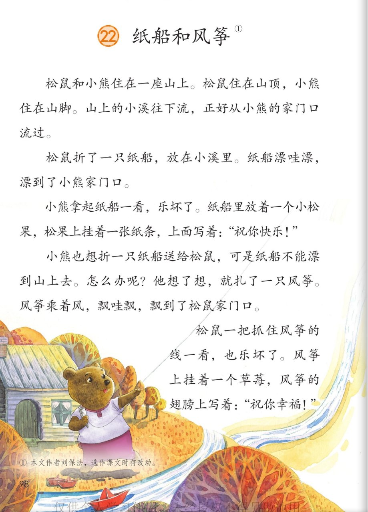
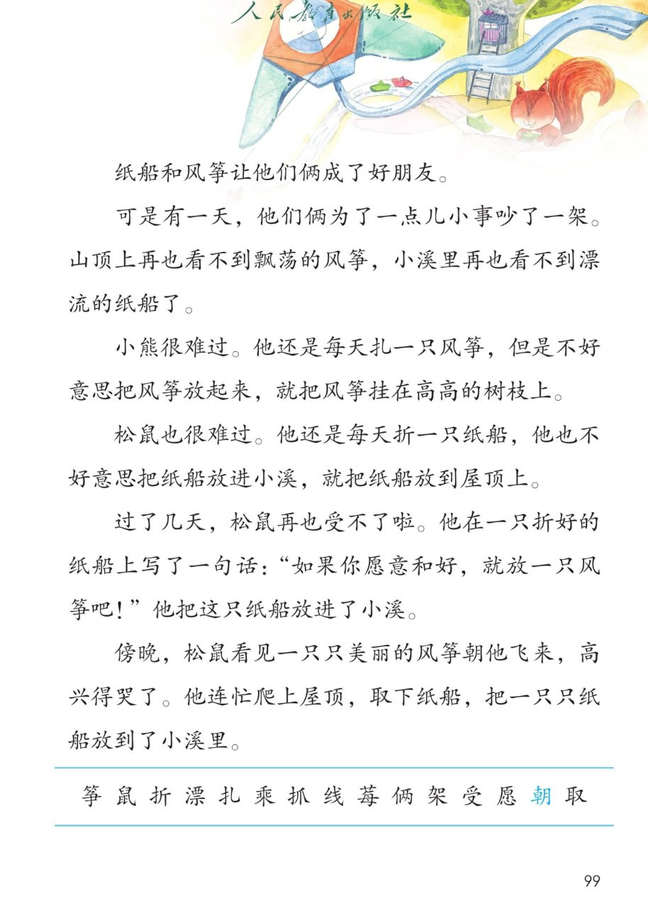
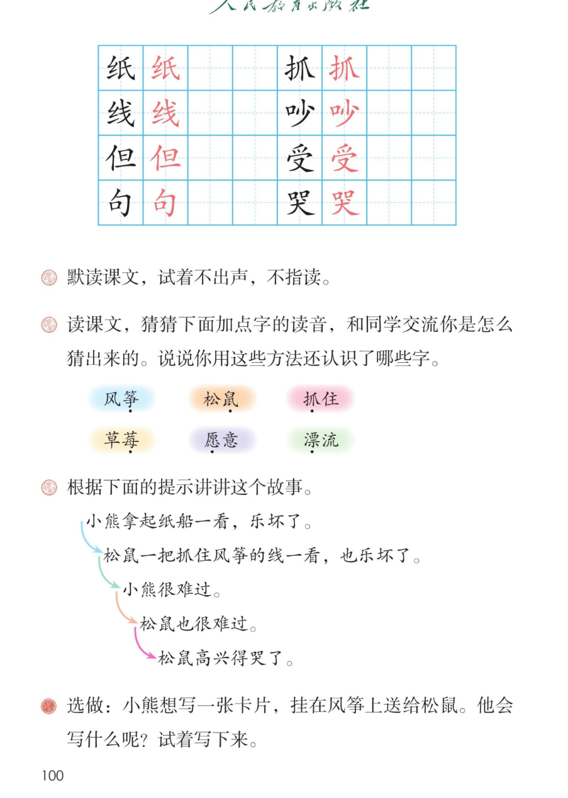

🐻 第 22 课《纸船和风筝》· 有声图文带读
统编版语文 · 第八单元·阅读 · 课本 第 98~100 页 · 作者：刘保法
课文 11 个自然段
会认字 15
会写字 8
听写词 10
近义词 4 组
深入理解 8 题
本课本领 猜字音
🎧 五步学（可随时点任意一句、一个字、一个词单独听）： ① 听读课文 ——一句一句读，读到哪一句哪一句发光；开「跟读」后读完一句留时间让你自己读。② 学字词 ——15 个会认字、8 个会写字（含书写提示），点一个读一个。③ 词语·听写·造句 ——先猜 6 个字怎么读，再听写 10 个词、听 4 组近义词辨析。④ 深入理解 ——8 道题（认知 / 理解 / 运用 / 拓展），开放题答案不唯一，先想后看。⑤ 讲故事·分角色 ——按课后题的提示讲这个故事，再分角色朗读。
点段前的 ①②③ 听整段
🔁 跟读模式：关
👁 隐藏注音（自测用）
本课生字表（第 99 页）没有印拼音，要自己猜；页面上的拼音按字典标注，供参考
🎤 朗读要求（老师标准） 不添字、不漏字、不回读 ；默读不出声、不指读 （本课新本领）：眼睛看字，心里跟着读；句号停得长一点 ；问句（“怎么办呢？”）句末往上扬 ；慢 ，像纸船、风筝慢慢漂过去；低、慢 ；最后“高兴得哭了”读出又想笑又想哭 。
① 松鼠shǔ 和小熊住在一座山上。 松鼠住在山顶，小熊住在山脚。 山上的小溪往下流，正好从小熊的家门口流过。
② 松鼠shǔ 折zhé 了一只纸zhǐ 船，放在小溪里。 纸船漂piāo 哇漂，漂到了小熊家门口。
③ 小熊拿起纸zhǐ 船一看，乐坏了。 纸船里放着一个小松果，松果上挂着一张纸条，上面写着：“祝你快乐！”
④ 小熊也想折zhé 一只纸zhǐ 船送给松鼠shǔ ，可是纸船不能漂piāo 到山上去。 怎么办呢？ 他想了想，就扎zhā 了一只风筝zhēng 。 风筝乘chéng 着风，飘哇飘，飘到了松鼠家门口。
⑤ 松鼠shǔ 一把抓zhuā 住风筝zhēng 的线xiàn 一看，也乐坏了。 风筝上挂着一个草莓méi ，风筝的翅膀上写着：“祝你幸福！”
⑥ 纸zhǐ 船和风筝zhēng 让他们俩liǎ 成了好朋友。
⑦ 可是有一天，他们俩liǎ 为了一点儿小事吵chǎo 了一架jià 。 山顶上再也看不到飘荡的风筝zhēng ，小溪里再也看不到漂piāo 流的纸zhǐ 船了。
⑧ 小熊很难过。 他还是每天扎zhā 一只风筝zhēng ，但dàn 是不好意思把风筝放起来，就把风筝挂在高高的树枝上。
⑨ 松鼠shǔ 也很难过。 他还是每天折zhé 一只纸zhǐ 船，他也不好意思把纸船放进小溪，就把纸船放到屋顶上。
⑩ 过了几天，松鼠shǔ 再也受shòu 不了啦。 他在一只折zhé 好的纸zhǐ 船上写了一句jù 话：“如果你愿yuàn 意和好，就放一只风筝zhēng 吧！” 他把这只纸船放进了小溪。
⑪ 傍晚，松鼠shǔ 看见一只只美丽的风筝zhēng 朝cháo 他飞来，高兴得哭kū 了。 他连忙爬上屋顶，取qǔ 下纸zhǐ 船，把一只只纸船放到了小溪里。
🤔 想一想（点我可跳过）
点一张图，听读整页

第 98 页 · 课题与课文前五段

第 99 页 · 吵架和好与生字表

第 100 页 · 田字格与课后题
📖 人教版《语文》二年级上册 · 课本第 98~100 页 · 图片仅供个人学习，版权归人民教育出版社所有
点一个字，听读音、词语和课文里的句子
结构、部首、笔画与书写提示为通用规范，供参考，以教材和老师的指导为准
纸
zhǐ
纸船 · 纸条
7 画 · 左右（纟）
右边氏，斜钩伸出去，末点别丢
线
xiàn
风筝线 · 毛线
8 画 · 左右（纟）
左窄右宽，右边的撇捺要舒展
但
dàn
但是 · 不但
7 画 · 左右（亻）
左窄右宽，旦的日写扁，横要长
句
jù
一句话 · 句子
5 画 · 半包围（勹）
勹要包住口，口写小、偏上
抓
zhuā
抓住 · 一把抓住
7 画 · 左右（扌）
左窄右宽，爪的撇要平，四笔分开
吵
chǎo
吵架 · 吵闹
7 画 · 左右（口）
口字旁小、偏上，少的竖要直
受
shòu
受不了 · 接受
8 画 · 上下（又）
上扁中宽，又的捺要舒展
哭
kū
哭了 · 大哭
10 画 · 上下（口）
两个口要小、对齐，犬的撇捺舒展
先自己猜，再看拼音；猜的方法就是看偏旁、找熟字
风筝 筝：竹字头，下边一个“争”，跟“争”同音。读 zhēng ，在“风筝”里读轻声
松鼠 鼠：这个字要整个记：上边像牙齿，下边像四条腿。读 shǔ ，第三声
抓住 抓：提手旁加一个“爪”，用手去拿就叫抓。读 zhuā ，第一声
草莓 莓：草字头加一个“每”，是一种小草，它的果子叫草莓。读 méi ，第二声
愿意 愿：下边一个“心”，是心里的想法；上边的“原”提示读音。读 yuàn ，第四声
漂流 漂：三点水加一个“票”，跟水有关。读 piāo ，第一声
读两遍 → 你在纸上写 → 报答案 → 听示范句
准备听写 · 共 10 个词
○ ○ ○
点下面的「开始听写」，听到一个词就写一个词。
▶ 开始听写
🔁 再读一遍
👁 看答案
点词听读，点句子听示范句，再自己说一句
1 纸船 课文词语
示范句：松鼠折了一只纸船，放在小溪里。
✏️ 我也能说：谁 + 折了 + 一只纸船。比如：我折了一只纸船。
2 纸条 课文词语
示范句：松果上挂着一张纸条，上面写着祝你快乐。
✏️ 我也能说：谁 + 挂着一张纸条。比如：风筝上挂着一张纸条。
3 风筝线 课文词语
示范句：松鼠一把抓住风筝的线。
✏️ 我也能说：一把抓住 + 什么。比如：我一把抓住风筝线。
4 但是 会写字
示范句：他还是每天扎一只风筝，但是不好意思把风筝放起来。
✏️ 我也能说：前半句 + 但是 + 后半句。比如：天很冷，但是我还是去跑步了。
5 一句话 会写字
示范句：他在一只折好的纸船上写了一句话。
✏️ 我也能说：写了一句话：……。比如：我在卡片上写了一句话：祝你生日快乐。
6 抓住 会写字
示范句：松鼠一把抓住风筝的线一看，也乐坏了。
✏️ 我也能说：谁 + 抓住 + 什么。比如：我抓住妈妈的手。
7 吵架 会写字
示范句：他们俩为了一点儿小事吵了一架。
✏️ 我也能说：谁和谁 + 为了一点儿小事 + 吵架。比如：我和同桌为了一块橡皮吵架。
8 受不了 会写字
示范句：过了几天，松鼠再也受不了啦。
✏️ 我也能说：再也受不了 + 什么。比如：天气太热，我受不了。
9 哭了 会写字
示范句：松鼠高兴得哭了。
✏️ 我也能说：高兴得哭了 / 急得哭了。比如：妹妹看见妈妈回来了，高兴得哭了。
10 幸福 课文词语
示范句：风筝的翅膀上写着：祝你幸福！
✏️ 我也能说：祝你幸福 / 幸福的生活。比如：一家人在一起很幸福。
相同点 / 不一样在哪 / 各造一句
快乐 — 高兴
相同：都是心里舒服、想笑。
不一样：快乐 多用在祝福里，说一种长久的好心情；高兴 多说自己当时的样子，常跟极了、得跳起来连用。
快乐：祝你快乐！
难过 — 伤心
相同：都是心里不舒服。
不一样：难过 程度轻一些，多因为事情不如意；伤心 程度重，常跟哭连在一起。
难过：小熊很难过。
美丽 — 漂亮
相同：都是好看。
不一样：美丽 多写景色和样子，书面一些；漂亮 还能说人、说事情办得好。
美丽：一只只美丽的风筝朝他飞来。
连忙 — 赶快
相同：都是动作快、不耽误。
不一样：连忙 是马上跟着做，多写对别人的反应；赶快 是催着自己或别人快一点。
连忙：他连忙爬上屋顶。
漂（水里）· 飘（风里） 纸船漂哇漂 风筝飘哇飘 漂到了家门口 飘到了山顶上
一只只 · 一张张（数量多） 一只只风筝 一只只纸船 一张张纸条 一个个松果
再也…（以后一直不） 再也看不到风筝 再也受不了啦 再也不理他了
乐坏了 · 高兴得哭了（高兴到极点） 乐坏了 高兴得哭了 高兴极了 难过极了
标「答案不唯一」的题，说得有道理都对
认知 松鼠和小熊的家分别住在哪儿？小溪是从谁的家门口流过的？看解析
🤔 想一想
解析：
课文第一自然段说：松鼠住在山顶，小熊住在山脚。
山上的小溪往下流，正好从小熊的家门口流过。
认知 纸船里放着什么、纸条上写着什么？风筝上挂着什么、翅膀上写着什么？看解析
🤔 想一想
解析：
第三自然段：纸船里放着一个小松果，纸条上写着祝你快乐。
第五自然段：风筝上挂着一个草莓，翅膀上写着祝你幸福。
理解 小熊为什么扎风筝，不折纸船？看解析
🤔 想一想
解析：
课文里说：可是纸船不能漂到山上去。
小熊想了想，才扎了一只风筝。风筝乘着风，飘哇飘，就飘到了松鼠家门口。
这一句说明小熊很会想办法：路走不通，就换一条路。
理解 吵了一架以后，为什么山顶上再也看不到风筝，小溪里再也看不到纸船了？看解析
🤔 想一想
解析：
第八、九自然段说：小熊很难过，松鼠也很难过。
两个人都还是每天做一个，可是都不好意思放出去。
所以不是不想和好，是都拉不下脸。
理解 松鼠只在纸船上写了一句“如果你愿意和好，就放一只风筝吧”，小熊为什么一看就懂，还放了一只只风筝？看解析
🤔 想一想
解析：
松鼠写上这句话，就是先低头、先伸手。
小熊放的不是一只，是一只只，说明他每天都在扎，心里一直想着朋友。
好朋友吵架，谁先开口，谁就最勇敢。
运用 “漂哇漂”和“飘哇飘”有什么不一样？用它们各说一句话。看解析
🤔 想一想
解析：
看偏旁：三点水跟水有关，风字旁跟风有关。
说句子时，先想清楚是在水里还是在风里，再选漂还是飘。
还能说：树叶飘哇飘，飘到了地上；小船漂哇漂，漂到了桥边。
🌈 答案不唯一，说清“在水里”还是“在风里”就很好
运用 小熊想写一张卡片，挂在风筝上送给松鼠。他会写什么呢？试着写下来。看解析
🤔 想一想
解析：
先说自己哪里做得不好：对不起，那天是我不好。
再说自己的心里话：我天天都在扎风筝，就等着你先说话。
最后提出希望：我们还是好朋友，好不好？
🌈 答案不唯一，写清“道歉、心里话、希望”三句就很好（这是课后题的选做题）
拓展 和好朋友闹了别扭，你会怎么做？看解析
🤔 想一想
解析：
先想一想：这件事是我错了吗？他为什么生气？
再主动一点：说一句对不起，或者递一张小纸条、送一个小东西。
如果一时说不出口，也可以请老师、请妈妈帮个忙。
🌈 答案不唯一，说出“先冷静、再主动、说清心里话”就很好
点一张卡，听这一步
💬 讲故事支架：先 说松鼠的纸船让小熊乐坏了（一个松果、一张纸条）→ 再 说小熊的风筝让松鼠也乐坏了（一个草莓、一句祝福）→ 接着 说为一点儿小事吵了一架，两个人都很难过，谁也不好意思先放 → 然后 说松鼠受不了啦，在纸船上写下一句话 → 最后 说小熊放起一只只风筝，松鼠高兴得哭了。
点一张卡，听这一部分怎么读
📖 旁白的开头
“松鼠和小熊住在一座山上。”
💬 开头要读得慢、清楚 ，把山顶、山脚、小溪的位置读明白
📖 旁白的纸船
“松鼠折了一只纸船，放在小溪里。”
💬 “漂哇漂”要读得慢 ，像纸船一点一点漂过去
🐻 小熊这一边
“小熊拿起纸船一看，乐坏了。”
💬 “乐坏了”要读得高兴 ，纸条上的祝福要读得温暖
📖 旁白讲小熊扎风筝
“小熊也想折一只纸船送给松鼠，可是纸船不能漂到山上去。”
💬 “怎么办呢”读出着急 ，“飘哇飘”读得轻
🐿️ 松鼠这一边
“松鼠一把抓住风筝的线一看，也乐坏了。”
💬 “一把抓住”要读得快 ，“也乐坏了”读出惊喜
📖 旁白讲吵架
“纸船和风筝让他们俩成了好朋友。”
💬 两个“再也看不到”读得低、慢 ，读出冷清和难过
🐻 小熊这一边
“小熊很难过。”
💬 “很难过”读得低 ，“不好意思”读得轻
🐿️ 松鼠这一边
“松鼠也很难过。”
💬 和上一张一个调子，两个“也”字要读出来
🐿️ 松鼠这一边
“过了几天，松鼠再也受不了啦。”
💬 “受不了啦”读得重 ，写的那句话要读得真诚
📖 旁白的结尾
“傍晚，松鼠看见一只只美丽的风筝朝他飞来，高兴得哭了。”
💬 “一只只”读出多 ，“高兴得哭了”读出又想笑又想哭